Intelligent Agents
This page presents my learning journey and evidence from the Intelligent Agents module. It brings together collaborative discussions, practical activities, team design work, my individual Inquiro implementation, feedback, professional development and reflection.
Live e-Portfolio: https://vinodjadhav-ai.github.io/
Contents
- Module Overview
- Learning Outcomes
- Learning Journey
- Collaborative Discussion 1
- Collaborative Discussion 2
- Unit 6: KQML and KIF Dialogue
- Team C Design Proposal
- Unit 8: Parse Tree
- Collaborative Discussion 3
- Unit 10: Deep Learning in Action
- Individual Project: Inquiro
- Reflective Case Studies
- Professional Development
- Final Reflection
- Learning Outcome Mapping
- References
1. Module Overview
This section will provide a concise overview of intelligent agents, agent architectures, communication between agents, and the practical design and implementation of an agent-based system.
2. Module Learning Outcomes
- Identify and critically analyse agent-based systems, differentiating between architectures and approaches.
- Apply and critically evaluate intelligent-agent techniques to real-world problems involving uncertainty and technical risk.
- Use appropriate software tools to design and implement an agent-based system while considering legal, social, ethical and professional issues.
- Develop the skills required to contribute effectively within a virtual development team.
A short explanation of how these outcomes were addressed through discussions, unit activities, the Team C proposal and the Inquiro project will be added here.
3. My Learning Journey
This section will summarise how my understanding developed from viewing agents mainly as automation tools to designing, implementing, testing and critically evaluating a multi-agent workflow.
4. Units 1–3: Collaborative Discussion 1
At the beginning of the module, I mainly understood intelligent agents as systems that could automate tasks, process data and support faster decision-making. In my initial post, I connected these ideas with examples from networking, cybersecurity and customer service.
The peer discussion helped me look beyond the benefits. Feedback introduced ideas such as bounded autonomy, emergent behaviour, governance and human oversight. While responding to other students, I also considered the BDI model, the role of Large Language Models and the need for validation when agents operate in complex environments.
This activity changed my view of agents from simple automation tools to systems that can act, adapt and cooperate, but may also behave unpredictably. It was one of the first activities where I began moving from describing ideas towards evaluating risks and limitations.
Learning outcomes addressed: LO1 and LO4.
Evidence
Initial Post
My submitted discussion on the growth, benefits and ethical considerations of agent-based systems.
View initial postFeedback Received
Peer feedback introducing bounded autonomy, governance, oversight and unpredictability.
View feedback receivedMy Peer Responses
My responses discussing emergent behaviour, BDI, LLM reliability and human oversight.
View my peer responsesSummary Post
My final summary showing how my understanding developed across Units 1–3.
View summary postDiscussion Screenshots


5. Units 4–7: Collaborative Discussion 2
In this discussion, I compared Agent Communication Languages such as KQML with direct method invocation in Python and Java. I initially understood software communication mainly as function calls or API requests. Studying KQML helped me understand that autonomous agents also need to communicate intentions, such as asking, informing, negotiating and refusing.
Feedback from my classmates expanded my understanding of shared ontologies and semantic interoperability. Even when agents use the same protocol, misunderstandings can still occur if they interpret concepts differently. The discussion also introduced approaches such as ontology alignment and more formal standards including FIPA-ACL.
While responding to peers, I considered speech act theory, security risks and prompt injection. This helped me recognise that richer communication provides greater flexibility, but also creates more complexity and risk. My final conclusion was that method invocation suits predictable and tightly coupled applications, whereas ACLs are more suitable when independent agents need to cooperate or negotiate.
Learning outcomes addressed: LO1, LO2 and LO4.
Evidence
Initial Post
My comparison of KQML with method invocation, including performatives, interoperability and ontologies.
View initial postFeedback Received
Peer feedback on ontology alignment, FIPA-ACL, semantic dependency and scaling communication.
View feedback receivedMy Peer Responses
My responses on speech acts, negotiation, security, prompt injection and modern agent frameworks.
View my peer responsesSummary Post
My final reflection on ACLs, method invocation, shared ontologies and the continuing relevance of KQML.
View summary postDiscussion Screenshots
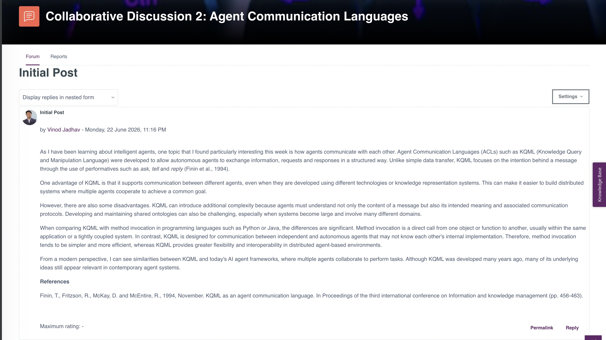
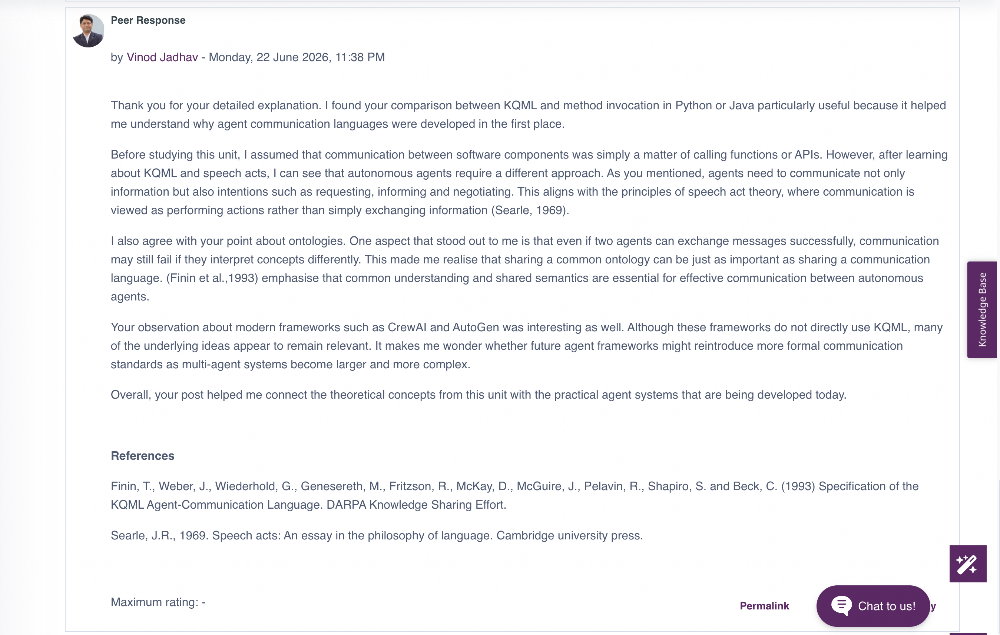
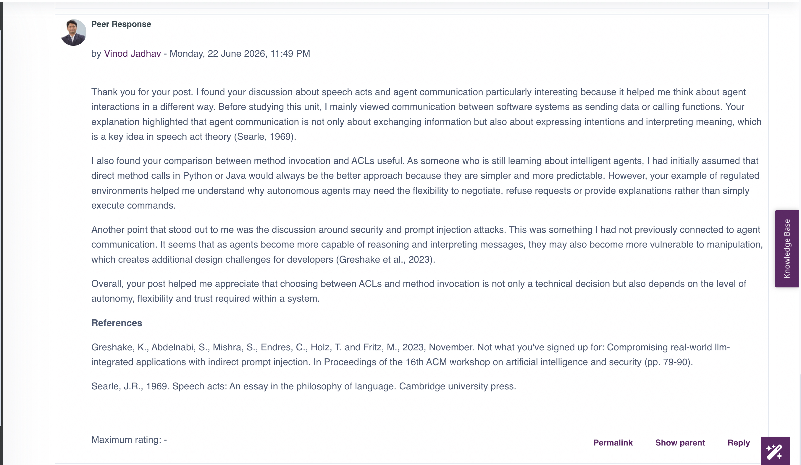
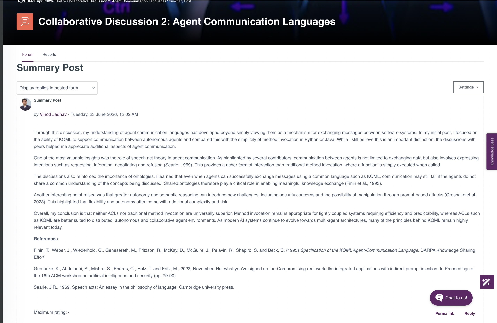
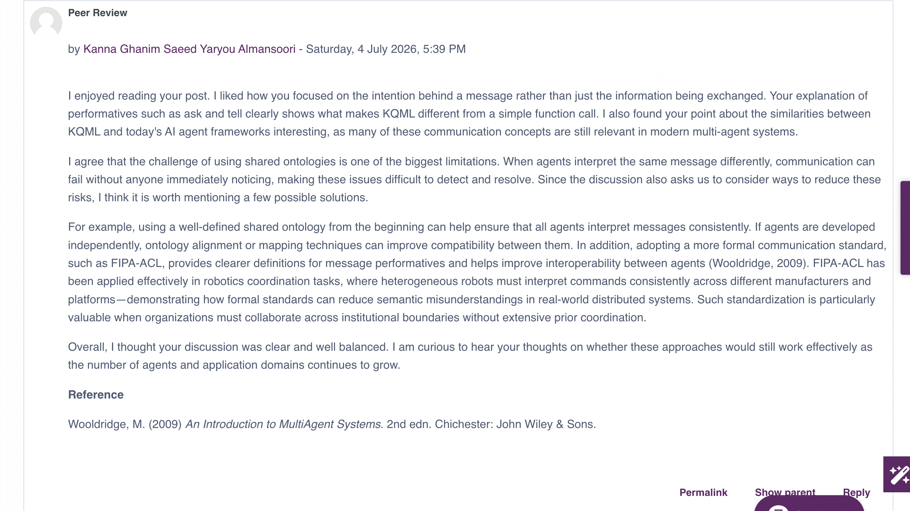
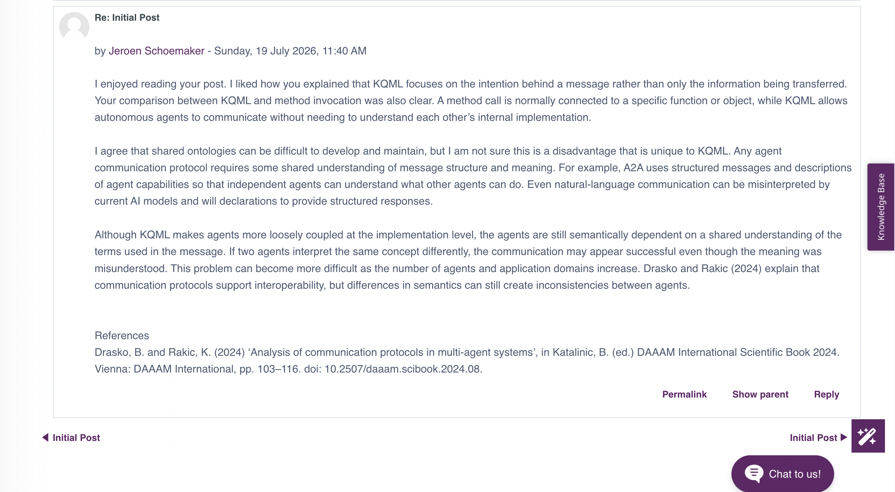
6. Unit 6: KQML and KIF Agent Dialogue
Completed Activity
The completed dialogue between Alice and Bob, together with a short explanation and reflection, will be added here.
Learning outcomes addressed: LO1 and LO2.
7. Team C Design Proposal
Project Objective
The purpose of the proposed academic research assistant will be explained here.
Proposed Agent Architecture
The Planner, Retriever, Processor and Writer roles, together with the proposed technologies, will be summarised here.
My Individual Contribution
My contribution to the design, discussion and decision-making process will be recorded here.
Critical Evaluation
The strengths, limitations and implementation complexity of the proposal will be compared with the later Inquiro implementation.
Evidence
- Team C Design Proposal
- Architecture diagram
- Meeting notes
- Evidence of my contribution
Learning outcomes addressed: LO1, LO2, LO3 and LO4.
8. Unit 8: Parse Tree Activity
Completed Activity
The completed parse tree, explanation and short reflection on language structure and natural-language processing will be added here.
Learning outcomes addressed: LO1 and LO2.
9. Units 8–10: Collaborative Discussion 3
Final commentary and evidence will be added after reviewing the submitted discussion material.
Learning outcomes addressed: LO2, LO3 and LO4.
9. Units 8–10: Collaborative Discussion 3
This discussion focused on the ethical implications of deep learning technologies. In my initial post, I examined issues including bias, Explainable AI (XAI), transparency and human oversight. I argued that although deep learning has achieved remarkable technical progress, responsible deployment depends on fairness, accountability and governance rather than model accuracy alone.
Feedback from my classmate introduced additional perspectives including the NIST AI Risk Management Framework and the EU AI Act. This broadened my understanding of how organisational governance and regulatory frameworks complement technical safeguards such as bias testing and explainability.
While responding to other students, I explored practical approaches for reducing ethical risks, including digital watermarking, provenance tracking, stronger identity verification, improved dataset documentation and continuous monitoring after deployment. These discussions helped me connect ethical theory with practical software engineering decisions.
Overall, this discussion strengthened my understanding that responsible AI requires continuous attention throughout the entire system lifecycle rather than only during model development.
Learning outcomes addressed: LO2, LO3 and LO4.
Evidence
Initial Post
Ethical issues in deep learning, including bias, XAI, transparency and governance.
View initial postFeedback Received
Peer feedback introducing NIST AI RMF, EU AI Act and governance frameworks.
View feedback receivedMy Peer Responses
My responses discussing deepfakes, watermarking, transparency and responsible deployment.
View my peer responsesSummary Post
My reflection on fairness, governance, explainability and responsible AI.
View summary postDiscussion Screenshots
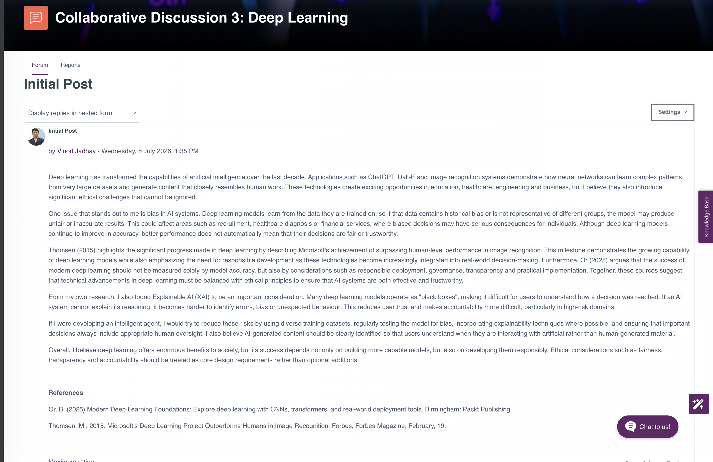
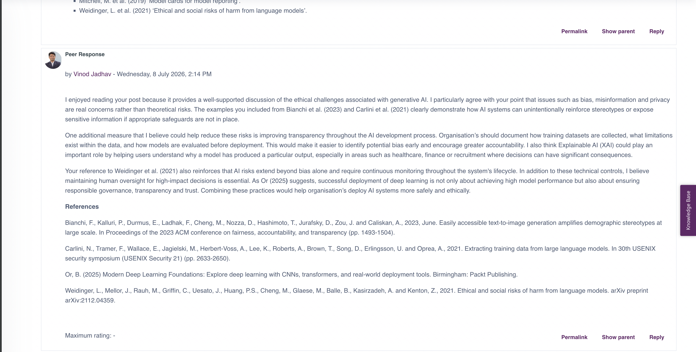
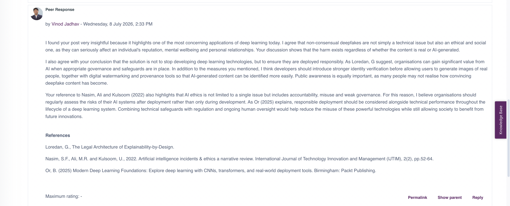
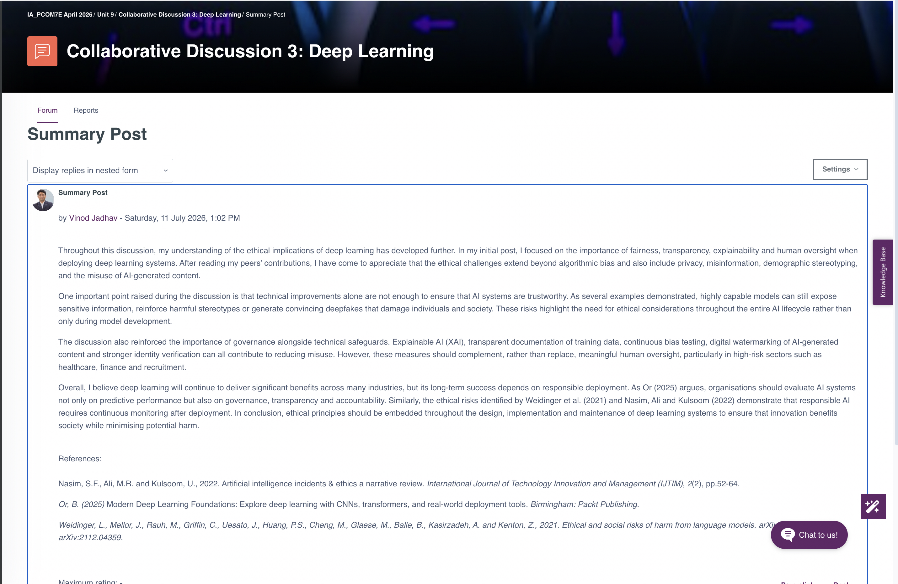
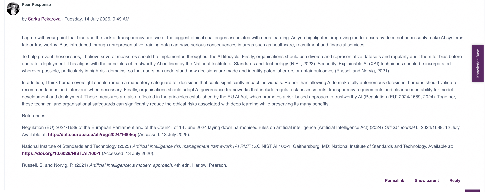
11. Units 11–12: Individual Project – Inquiro
Project Overview
A concise explanation of the Inquiro academic research assistant will be added here.
Original Design and Final Architecture
This section will compare the Team C proposal with the final LangGraph workflow.
Agent Roles
- Planner
- Retriever
- Processor
- Writer
Implementation Journey
The use of Python, LangGraph, Ollama, Llama 3.2 3B and the arXiv API will be explained here.
Testing and Validation
Unit tests, workflow testing, logs, intermediate outputs and remediation evidence will be summarised here.
Strengths
- Clear separation of agent responsibilities
- Local model execution
- Saved intermediate outputs
- Logging and testing
- Real arXiv retrieval
Limitations and Future Improvements
The limitations of the local model, retrieval depth, command-line interface, limited evaluation time and absence of a human approval stage will be discussed here.
Project Evidence
- Source code
- README
- Architecture diagram
- Testing evidence
- Screenshots
- Remediation log
- Presentation
- Audio transcript
Learning outcomes addressed: LO1, LO2 and LO3.
12. Three Reflective Case Studies
Case Study 1: AI Safety Constraints
Bounded autonomy, testing, safe failure and human oversight.
Case Study 2: Explainable Decisions in Agents
Agent stages, logs, intermediate outputs and traceability.
Case Study 3: Responsible Deployment
Reliability, source quality, model limitations and human review.
13. Team Meetings, Feedback and Professional Development
Team Meeting Notes
| Date | Participants | Discussion or Decision | My Action or Contribution |
|---|---|---|---|
| To be added | To be added | To be added | To be added |
Feedback and Action Taken
| Source | Feedback | Action Taken |
|---|---|---|
| To be added | To be added | To be added |
Professional Skills Matrix and PDP
| Skill | Evidence | Current Position | Future Action |
|---|---|---|---|
| Critical thinking | To be added | Developing | To be added |
| Teamwork | To be added | Developing | To be added |
| Problem-solving | To be added | Developing | To be added |
| IT and digital skills | To be added | Developing | To be added |
| Ethical awareness | To be added | Developing | To be added |
| Critical reflection | To be added | Developing | To be added |
14. Final Reflective Piece
Maximum word count: 1,000 words.
What?
Project outcome, team design, individual implementation and important technical incidents.
So What?
Critical analysis, emotional response, changes in understanding, teamwork and ethical development.
Now What?
Future technical learning, better testing, responsible AI practice and application to network automation.
Reflective framework: Rolfe, Freshwater and Jasper (2001).
15. Learning Outcome Mapping
| Evidence | LO1 | LO2 | LO3 | LO4 |
|---|---|---|---|---|
| Discussion 1 | ✓ | ✓ | ||
| Discussion 2 | ✓ | ✓ | ✓ | |
| Unit 6 Dialogue | ✓ | ✓ | ||
| Team C Proposal | ✓ | ✓ | ✓ | ✓ |
| Unit 8 Parse Tree | ✓ | ✓ | ||
| Discussion 3 | ✓ | ✓ | ✓ | |
| Unit 10 Activity | ✓ | ✓ | ||
| Inquiro Project | ✓ | ✓ | ✓ | |
| Final Reflection | ✓ | ✓ | ✓ | ✓ |
16. References
The final Harvard reference list will be added after all portfolio sections are complete.
Rolfe, G., Freshwater, D. and Jasper, M. (2001) Critical reflection in nursing and the helping professions: a user's guide. Basingstoke: Palgrave Macmillan.